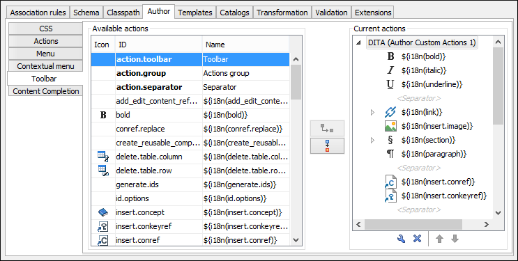

Customizing the Toolbar for a Framework
This procedure describes how to add defined actions to a toolbar for a custom framework. You can also create additional
custom toolbars with existing or custom actions.
- Open the Document Type configuration dialog box for your custom framework and select the Author tab.
-
Go to the Toolbar subtab.
Figure 1. Configuring the Toolbar The panel is divided in two sections. The left side contains a list of actions, while the right side contains an action tree, displaying the list of actions added in the toolbar. The special entry called Separator allows you to visually separate the actions in the toolbar.
- To add an action, select it in the left panel and select the particular toolbar label
where you want it added in the right panel section, then click the
 Add as child or
Add as child or  Add as sibling button.
Add as sibling button.
Result: When opening a document for the particular framework in Author mode, the toolbar with the new buttons will be displayed in the toolbar area.
Tip: If you have many custom toolbar actions, or want to group actions according to
their category, add more toolbars with custom names and split the actions to better suit your
purpose. If your toolbar is not displayed when switching to the Author
mode, right-click the main toolbar, select Configure Toolbars, and make
sure the appropriate toolbar (such as the Author Custom Actions
toolbar) is selected.
Note: A maximum of 16 toolbars can be added. If you add more, all extra toolbars will be
automatically converted to sub-toolbars for the last added toolbar.